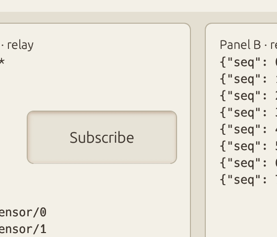
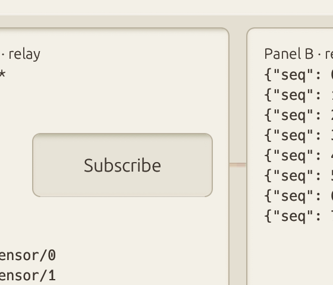
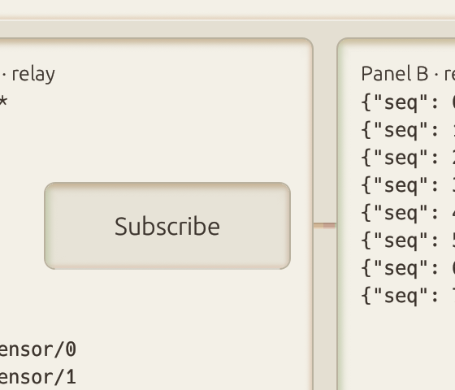
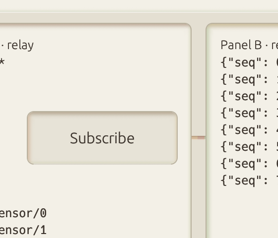
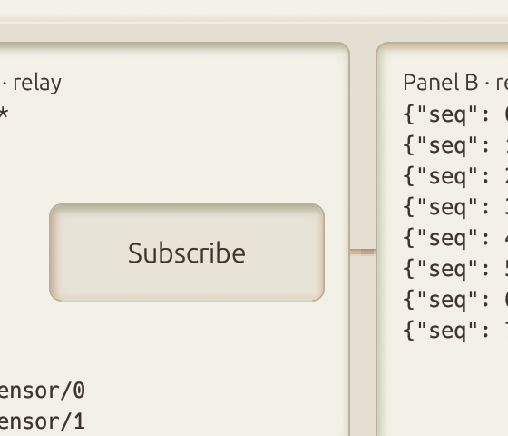
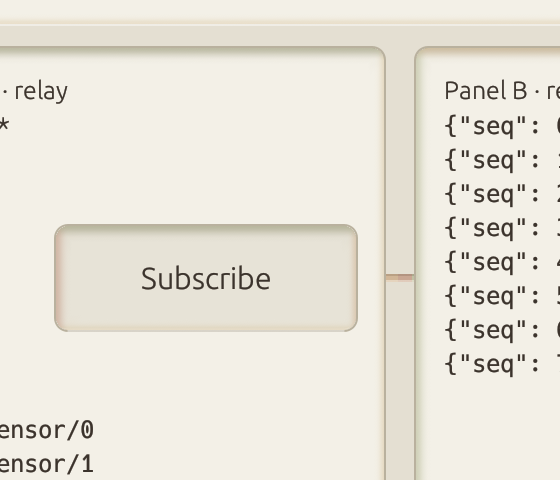
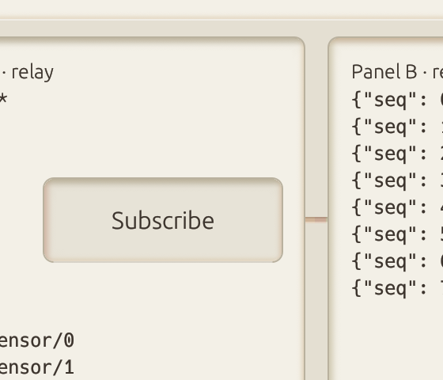
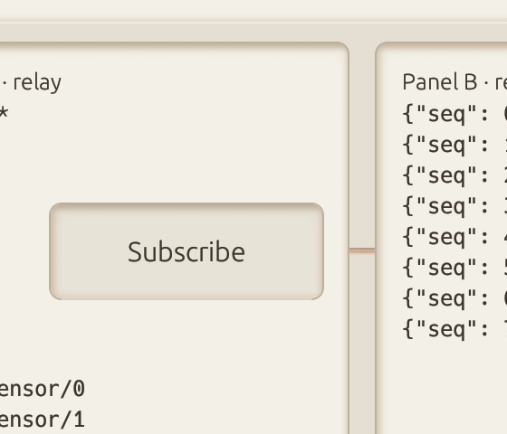
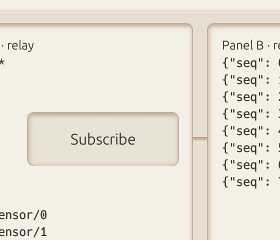

T11 frame strip — egui 0.29.1 spike (branch spike/causal-motion-egui), Subscribe → simulated 600 ms commit; crop x70–350 y44–284 pt at 2× (same 560×480 px as T9); t = ms after the commit, taken from egui's i.time of the painted frame (GL framebuffer read back after painting that frame); real-time playback, not slowed

t = -19 ms (T9 slot -21 ms)

t = +84 ms (T9 slot 82 ms)t = +175 ms (T9 slot 174 ms)

t = +267 ms (T9 slot 265 ms)t = +350 ms (T9 slot 351 ms)

t = +439 ms (T9 slot 439 ms)t = +522 ms (T9 slot 523 ms)

t = +614 ms (T9 slot 608 ms)t = +698 ms (T9 slot 695 ms)t = +781 ms (T9 slot 780 ms)

t = +864 ms (T9 slot 867 ms)

t = +950 ms (T9 slot 954 ms)

t = +1042 ms (T9 slot 1041 ms)

t = +1128 ms (T9 slot 1126 ms)t = +1206 ms (T9 slot 1207 ms)t = +1275 ms (T9 slot 1282 ms)